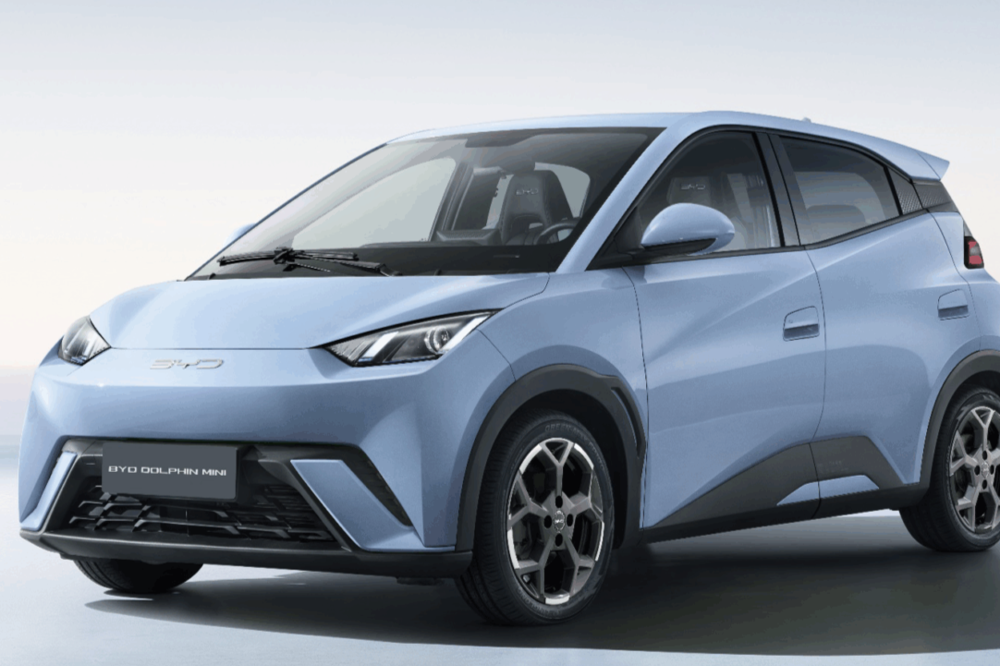

A mobilidade elétrica é um dos pilares mais eficientes para concretizar o ODS 7, pois a sustentabilidade de um carro elétrico depende
diretamente da fonte utilizada para carregá-lo, um cenário amplamente favorável no Brasil, onde cerca de 90% da eletricidade provém de
matrizes renováveis como solar, eólica e hídrica (Meta 7.2).
Além de fechar o ciclo da energia limpa no transporte diário, esses
veículos atendem à busca por eficiência energética (Meta 7.3), já que os motores elétricos aproveitam mais de 80% da
energia consumida para movimentar o automóvel, em contraste com os motores a combustão tradicionais, que desperdiçam cerca de 70% do
combustível em forma de calor. Por fim, essa transição descarboniza os deslocamentos urbanos ao substituir a queima de gasolina e diesel
por eletricidade, reduzindo drasticamente a emissão de gases de efeito estufa (CO2) e de poluentes locais, o que resulta na melhoria da
qualidade do ar e da saúde pública nas cidades.
